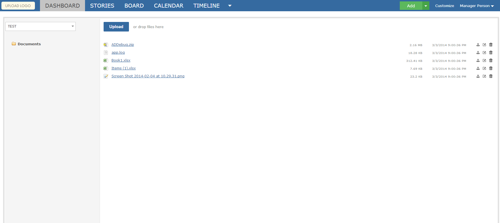

The DocStore app allows you to manage and organize all file types you wish to upload into Gemini. The DocStore is personalized for specific workspaces, allowing for privacy and organization from workspace to workspace. Within the DocStore, you may add, edit, and remove folders to fit your organizational needs.

You will want to first ensure that the DocStore app is associated with the projects you want to use it for. You must be in the Gemini Adminstrator group to do this.
From "Configure Gemini", navigate to Apps > DocStore. Here, select the projects you wish to enable the DocStore app for (you can specify "All Projects"). From this screen, you may also modify which user groups can view, and edit, within the DocStore app - this gives you complete control over the app. Once you have made the desired changes, simply click "Save" and navigate back to the item grid.
From here, enabling the DocStore app for a workspace is simple. Simply go to the menu of the workspace you wish to enable the DocStore app for and check "DocStore" on the Workspace tab.
From menu the "Docstore" option will be present, allowing you to upload and store your project documents.